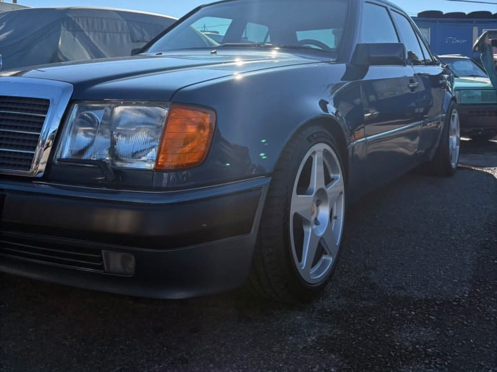
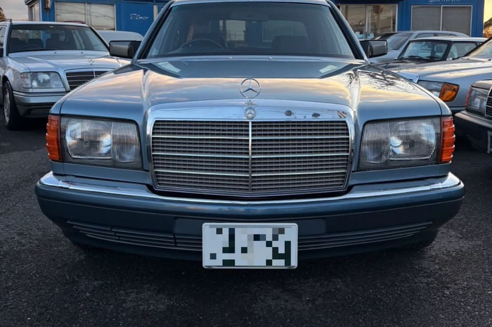
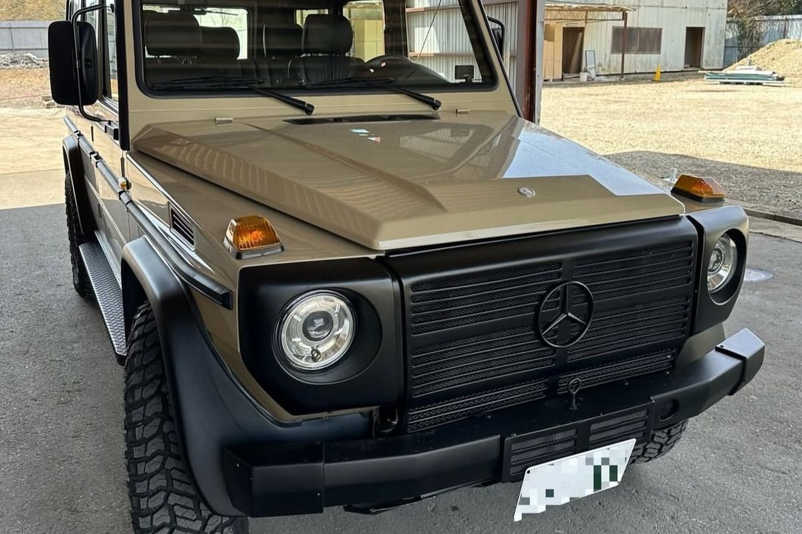

Models we buy
買取強化モデル
下記は特に高く評価できるシャシーです。記載のないメルセデスも買取対象ですので、まずはお声がけください。
 W123
ミディアムクラス
1976 — 1986
W123
ミディアムクラス
1976 — 1986
230E・280E・300D、そしてクーペ C123 とワゴン S123。錆と内装の程度で価格が大きく割れる一台です。
買取ポイントと相場を見る W201
190E
1982 — 1993
W201
190E
1982 — 1993
小さな高級車。2.3-16／2.5-16 はコスワースヘッドを持つ別格の存在として評価します。
買取ポイントと相場を見る
W124 Eクラス／ミディアム 1984 — 1996「一生モノ」と言われた完成度。500E／E500、カブリオレ、ワゴンは特に強化買取中です。
買取ポイントと相場を見る
W126 Sクラス／SEC 1979 — 1991560SEL、そしてクーペの C126 560SEC。最善か無かを体現した世代の頂点を評価します。
買取ポイントと相場を見る R107 / R129 SLクラス 1971 — 2001ハードトップ、幌、油圧オープン機構。オープン特有の装備の有無が、そのまま金額に効きます。
買取ポイントと相場を見る
W460 / W463 Gクラス 1979 — 2018ゲレンデヴァーゲン。W460のショート、ディーゼル、G500。相場が上がり続けている領域です。
買取ポイントと相場を見る上記以外にも W111・W114／W115・W116・W140・W202・W210、および各年代のAMGモデルを買取対象としています。